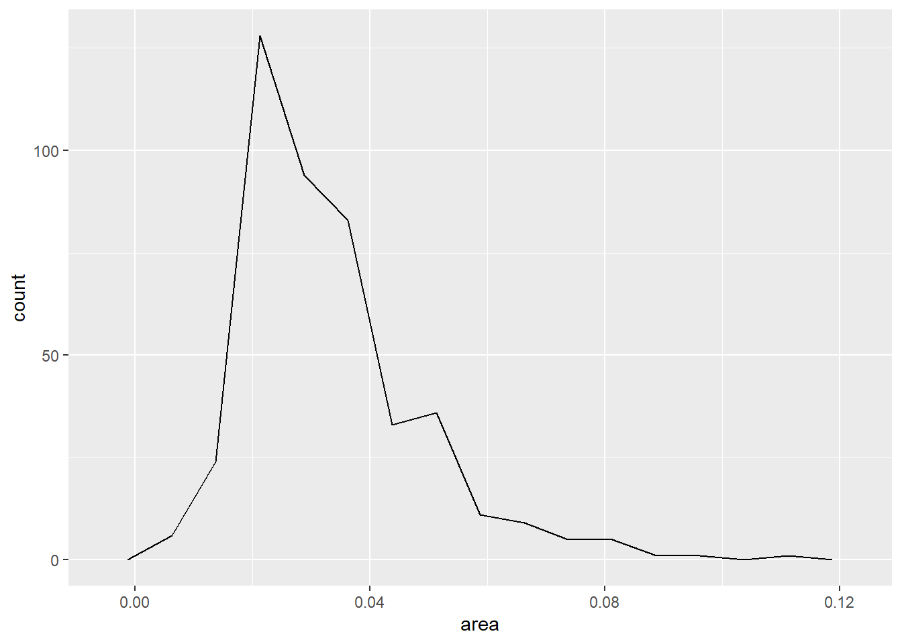
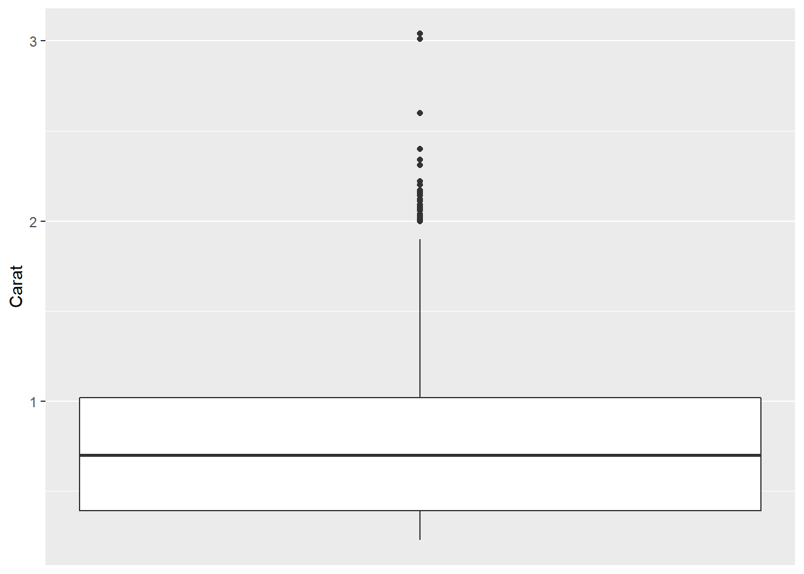
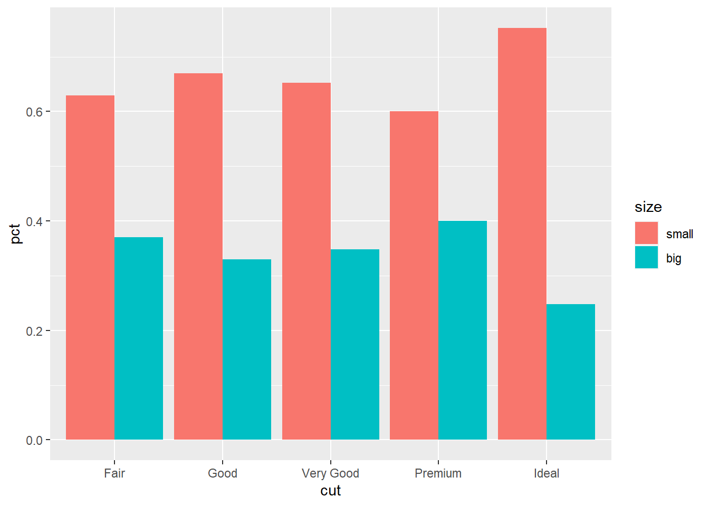

30 ggplot的各种图形
30.1 介绍
ggplot2包提供了许多种图形， 其作用可以大致地分为：
- 表现数量；
- 表现一维或者二维分布；
- 表现两个变量之间的数量关系，等等。
下面按照其作用分别进行介绍。
主要参考：
- Claus O. Wilke(2019). Fundamentals of Data Visualization. O’Reilly Media. https://serialmentor.com/dataviz/
30.2 表现数量
30.2.1 条形图
设有若干个类， 每个类有一个数量属性值。 经常用条形图表现数量。
30.2.1.1 简单的条形图
例如， 有25个共同基金， 分为三个类别， 各类别的频数为：
d_funds_type <- tibble(
type = c("国内股本", "国际股本", "固定收益"),
freq = c(16, 4, 5)
)
knitr::kable(d_funds_type)| type | freq |
|---|---|
| 国内股本 | 16 |
| 国际股本 | 4 |
| 固定收益 | 5 |
用ggplot()输入数据并指定映射，
用geom_col()作条形图，
x轴为类别，y轴为每个类别对应的数值，这里是输入数据中的频数：
上面的最后一行程序也可以用geom_bar()函数写成p + geom_bar(stat = "identity")。
geom_bar()可以对分类变量的原始值自动统计频数然后做频数条形图，
如果输入数据已经是频数，
就需要加stat = "identity"选项。
上面的三个类的次序并不是输入的次序，
这是因为字符型变量会自动转换为因子型，
因子水平一般按字典序排列。
可以在输入时用factor(x, levels=<指定的因子水平表>)定义因子并人为指定因子次序，
或者用forcats包的fct_relevel()函数，如：
d <- d_funds_type %>%
mutate(type = fct_relevel(type, "国内股本", "国际股本", "固定收益"))
p <- ggplot(data = d, mapping = aes(
x = type, y = freq ))
p + geom_col()
可以用forcats包的fct_reorder()函数，
将各个水平按照频数大小排序，如：

注意，
条形图中这种对各条形按照高度重排序的做法仅适用于各类没有自然的次序的情形，
如果各类有自然的次序，
比如年份、月份、季度、年龄组、收入高低分组等，
就应该按照各类的自然次序，
可以在输入数据时用factor(x, levels=<指定的因子水平表>)定义因子并人为指定因子次序，
或者在输入数据后用forcats包的fct_relevel()函数重排次序。
当分类的标签值（如“固定收益”）较长而且类个数较多时， 横轴的宽度可能不够用，使得相邻两项的标签重叠， 只好省略部分标签。 这时， 一种办法是将类标签方向变成45度角：
针对条形图的各条形的标签太长的问题，
更好的办法是将条形横向放置，
这样类标签就到了y轴，
可以横向显示。
这可以在映射中直接修改，
但最好还是用coord_flip()函数颠倒x轴与y轴的作用，
因为有些图形是不允许修改映射的。
程序如
下面用labs()去掉分类标签轴的标题并修改频数轴的标题：
如果需要将频数替换成比例或者百分数， 只要修改输入数据增加相应的变量即可。
30.2.1.2 并列和堆叠的条形图
在某次对某物业公司服务的4个社区的居民的抽样调查中抽查了80位居民， 其性别与所属社区如下：
mat_comm <- matrix(
c(9, 10, 13, 4,
18, 7, 8, 11),
nrow=4, ncol=2,
dimnames = list(c("A社区", "B社区", "C社区", "D社区"), c("男", "女"))
)
knitr::kable(mat_comm)| 男 | 女 | |
|---|---|---|
| A社区 | 9 | 18 |
| B社区 | 10 | 7 |
| C社区 | 13 | 8 |
| D社区 | 4 | 11 |
将表格数据转换为数据框：
d_comm <- as.data.frame(as.table(mat_comm))
names(d_comm) <- c("社区", "性别", "频数")
knitr::kable(d_comm)| 社区 | 性别 | 频数 |
|---|---|---|
| A社区 | 男 | 9 |
| B社区 | 男 | 10 |
| C社区 | 男 | 13 |
| D社区 | 男 | 4 |
| A社区 | 女 | 18 |
| B社区 | 女 | 7 |
| C社区 | 女 | 8 |
| D社区 | 女 | 11 |
现在数据中有两个分类变量，
频数是交叉分类的结果，
这样的数据称为“列联表”。
这时，
将两个分类变量中一个作为大类，
映射到x维度，
另一个作为小类，
映射到fill维度，
频数映射到y维度。
使用geom_col()或者geom_bar(stat = "identity")。
如：
结果为堆叠的条形图， 每个大类画一个分段的条形， 条形的程度等于各段长度之和。 这需要各段长度之和相当于每个大类的某种总计， 对于频数，这当然是合理的， 每段长度每个交叉小类的频数， 而一个条形的总长度是一个大类的频数。 当y轴映射到其它指标时堆叠条形图不一定合适， 比如， 如果y映射到每个交叉小类的某个指标的标准差， 因为标准差的和并不是标准差， 所以就不能用堆叠条形图表示。
下面将社区作为大类，性别作为小类：
在geom_col()和geom_bar()中加选项position = "dodge"可以将小类并列放置：
p <- ggplot(data = d_comm, mapping = aes(
x = `性别`, fill = `社区`, y = `频数`
))
p + geom_col(position = "dodge")这样得到并列的条形图。
并列条形图就不需要像堆叠条形图那样要求各个小类的y轴变量和有意义。
堆叠条形图相当于在geom_col()中加position = "stack"。
也可以将不同的大类放置到不同的小图，
用facet_wrap()或者facet_grid()函数：
注意各小图默认使用相同的坐标范围。
30.2.1.3 百分数的条形图
对于只有一个分类变量的条形图， 如果y轴代表频数， 为了转换成比例或者百分比， 修改输入数据增加像相应的变量， 如：
对于有两个分类变量的列联表， 如果希望y轴表现总百分数， 只要修改输入数据集增加相应的变量。 如果y轴希望表现每个大类内的百分数， 首先增加大类内的百分数， 比如下面的程序将社区居民调查数据按社区分为大类， 每个社区内计算不同性别的百分数：
这样，与对频数作图类似就可以做堆叠条形图， 每个社区为一个大类， 每个大类总计100%：
在geom_col()中加position = "dodge"可以变成并列条形图，
每个社区为一个大类，
每个大类中总计100%：
p <- ggplot(data = d, mapping = aes(
x = `社区`, fill = `性别`, y = `百分数`
))
p + geom_col(position = "dodge")与前一章29.5.1中类似问题相比，
对表格数据做比例或者百分数条形图，
比基于原始数据直接用geom_bar()做图要简单而且不易出错。
30.2.1.4 直接标记数字的条形图
比较简单的条形图，
可以不使用y坐标轴而是对每个条形或者堆叠的每个段标出数字。
用geom_text()函数标数字。
如：
d <- d_funds_type %>%
mutate(type = fct_relevel(type, "国内股本", "国际股本", "固定收益"))
p <- ggplot(data = d, mapping = aes(
x = type, y = freq ))
p + geom_col(fill = "lightblue") +
geom_text(mapping = aes(
y = freq / 2, label = paste(freq))) +
scale_y_continuous(breaks = NULL) +
coord_flip() +
labs(x = NULL,
y = NULL)上述程序中，
用了scale_y_continuous()的breaks = NULL选项使得y轴（经过对换后画在了x轴）不画刻度和刻度值。
堆叠的条形图用数字而非坐标轴的例子如下：
d_comm %>%
arrange(`性别`, desc(`社区`)) %>%
group_by(`性别`) %>%
mutate(ylabel = cumsum(`频数`) - 0.5*`频数`) -> d
p <- ggplot(data = d, mapping = aes(
x = `性别`, fill = `社区`, y = `频数`
))
p + geom_col() +
geom_text(mapping = aes(
y = ylabel, label = paste(`频数`) )) +
scale_y_continuous(breaks = NULL) +
labs(y = NULL)上述程序中预先计算了每段的纵坐标值，
保存在变量ylabel中。
注意计算过程中的排序与分组操作。
30.2.2 点图
条形图的y轴一般都代表数量， 最小值从0开始， 一般不画y轴最小值大于0的条形图。
对于不会取0的量， 可以取y轴的范围为某个区间而不必总是从0开始。 这时， 可以用散点位置表示y坐标。
考虑gapminder包的gapminder数据集中各国的平均期望寿命， 先求出每个大洲的期望寿命最大值：
library(gapminder)
gapminder %>%
select(continent, country, lifeExp) %>%
group_by(continent) %>%
summarise(lifeExp = max(lifeExp, na.rm=TRUE)) %>%
ungroup() -> d_gap用点图表现各大洲的期望寿命：
p <- ggplot(data = d_gap, mapping = aes(
x = fct_reorder(continent, lifeExp), y = lifeExp ))
p + geom_point() +
coord_flip()程序中并没有人为指定lifeExp轴的坐标范围， 作图程序自动选择了合适的范围。 对各大洲按照lifeExp的值做了排序。 这个图形很好地体现了不同大洲的最大期望寿命的差距。 如果使用条形图， 因为坐标轴从0开始， 各个条形的长度会很接近， 不利于体现差距：
30.2.3 热力图
如果交叉分类得到许多个交叉组， 每组有一个数量需要展示， 用堆叠或者并排条形图可能过于复杂， 结果很难判读； 如果用点图， 不同小类之间的区别也不容易认读。
可以用x轴和y轴分别表示两种分类，
在坐标交叉处用色块颜色代表数量，
称为热力图。
用geom_tile()作这种图，
将数量映射到fill维度。
例如， 考虑gapminder包的gapminder数据集中各国的平均期望寿命， 先得到每个大洲每年内各国期望寿命的中位数：
gapminder %>%
select(continent, year, lifeExp) %>%
group_by(continent, year) %>%
summarise(lifeExp = median(lifeExp, na.rm=TRUE)) %>%
ungroup() -> d_gap2a
d_gap2a %>%
filter(year == 2007) %>%
arrange(desc(lifeExp)) -> d_gap2b
d_gap2a %>%
mutate(continent = factor(continent, levels = d_gap2b$continent)) -> d_gap2上面的程序中将各大洲的次序调整为最后一年的中位期望寿命。 作热力图：
p <- ggplot(data = d_gap2, mapping = aes(
x = year, y = continent, fill = lifeExp))
p + geom_tile() +
scale_fill_viridis_c()函数scale_fill_viridis_c()提供了连续变量到颜色的一种映射，
在黑白显示时仍适用，且使用色盲的读者。
热力图中不易读出每个交叉组的数量的具体数值， 但是比较容易进行组间比较以及展示发展趋势。
30.3 表现分布
对于离散变量， 可以用频数、比例、百分数的条形图表现单个离散变量分布， 可以用热力图表现两个离散变量的分布。
对于连续型变量， 可以用直方图、密度估计图表现单个变量分布， 可以对多个变量同时做密度估计图。 可以用正态QQ图、盒形图、经验分布函数图等表现一元分布。
30.3.1 单个一元分布的直方图与密度估计图
直方图是最常用的表现一元连续变量分布的方法。
geom_histogram()作直方图，
可以自动选取合适的分组个数，
也可以人为指定分组个数。
直方图的结果受分组个数与分组的开始位置的影响较大，
所以使用直方图时应该尝试选用不同的分组数，
选择较适当的分组个数。
ggplot2包中的midwest数据集包含了美国中西部的一些县的统计数据，
如面积（单位：平方英里）。
下面的程序对连续取值的数值型变量area作频数直方图，
自动确定分组个数：
## `stat_bin()` using `bins = 30`. Pick better value with `binwidth`.不像R基本绘图的hist()函数，
geom_histogram()默认使用30个分组，
而不是根据样本量大小决定分组，
所以一般应该自己指定分组数或者分组宽度。
在geom_histogram()中用bins =指定分组个数，
或者用width指定分组宽度，如：
可以用boundary或者center指定某一个条形的边界或者中心，
用breaks指定所有分点位置。
如
可以将直方图画成连线形式，用geom_freqpoly()函数，如上图可以改为：

上图虽然是连线形式，但本质上还是一个阶梯函数的不同画法。
geom_density()可以对连续变量先做核密度估计，
然后绘制密度估计曲线，如：
密度曲线估计受到窗宽bw与核函数kernel的影响。
默认核函数为高斯核（标准正态分布密度作为核函数）。
除了估计曲线，
还可以用涂色区域表示密度估计，
用geom_area(stat = "density")函数：
因为核密度估计一般是连续曲线，
所以估计的曲线很可能在密度为零的地方估计为正数。
ggplot2在设计时已经考虑了避免这个问题，
但是用户自己用R的density()函数作核密度估计时还有这个问题。
可以将直方图与密度估计图合并在一起， 这时直方图的纵坐标需指定为密度估计， 这样两种图的纵坐标才处于相同的范围：
## `stat_bin()` using `bins = 30`. Pick better value with `binwidth`.30.3.2 多个一元分布的直方图和密度图形
考虑ggplot2包的midwest数据集，
这是美国中西部若干个县的数据。
选取其中的IL和IN两个州的数据，
只要将州名映射为fill维，
就可以在geom_histogram()或者geom_line(stat = "density")对各县面积作直方图时按不同州分段显示：
midwest %>%
filter(state %in% c("IL", "IN")) -> d
p <- ggplot(data = d, mapping = aes(
x = area, fill = state))
p + geom_histogram()## `stat_bin()` using `bins = 30`. Pick better value with `binwidth`.可以看出， IN州的县面积偏小， IL州的县面积较大。 这样的条形分段的直方图的缺点是， 下面的段的直方图形状是清楚的， 但是上面一段（上图中为IL州）的直方图则看不出形状。
如果将数据中所有的5个州都包含并在直方图中分段， 图形就变得更难认读：
p <- ggplot(data = midwest, mapping = aes(
x = area))
p + geom_histogram(mapping = aes(fill = state))## `stat_bin()` using `bins = 30`. Pick better value with `binwidth`.可以用折线方式画直方图， 不同州用不同颜色：
## `stat_bin()` using `bins = 30`. Pick better value with `binwidth`.
可以将州映射到fill，
给geom_histogram()加position = "fill"选项：
## `stat_bin()` using `bins = 30`. Pick better value with `binwidth`.
上图的每个条形长度都拉平了， 显示的是按area分组后每组内不同州的比例大小。
可以将不同的州分配到不同的小图，如：
## `stat_bin()` using `bins = 30`. Pick better value with `binwidth`.为了表现多个组的分布， 也可以将各组的具体数据用散点画出， 并添加随机扰动使其不重叠：
p <- ggplot(data = midwest, mapping = aes(
x = area, y = state))
p + geom_jitter(width = 0, height = 0.3, alpha = 0.5)
对每个州作密度估计并将多条密度曲线画在同一坐标系可以较好地反映不同州的县面积分布：
p <- ggplot(data = midwest, mapping = aes(
x = area, color = state))
p + geom_line(stat = "density")增加涂色，用透明度alpha使其可以重叠显示：
p <- ggplot(data = midwest, mapping = aes(
x = area, color = state, fill = state))
p + geom_density(alpha = 0.4)可以利用geom_text()或者geom_text_repl()将各曲线的标签标在曲线附近，
就可以取消图例显示。
30.3.3 经验分布函数图
直方图和密度估计图能够比较直观地了解数据的分布情况， 但是会受到窗宽、分组位置的影响， 所以可以看成是对数据的某种建模结果。 可以将所有数据观测值画出来， 用适当的透明度可以表现点的稠密程度， 但是当数据量特别大的时候这种方法就不合适， 而且对数据的概括性描述总是必要的。 经验分布函数图很好地描述和概括了数据的分布， 从中可以很容易得到样本分位数的估计， 而且不会受到任何参数选择影响。 一组观测值\(X_1, X_2, \dots, X_n\)的经验分布函数定义为 \[ F_n(x) = \frac{\#\{X_i: X_i \leq x \}}{n} = \frac{1}{n} \sum_{i=1}^n I_{(-\infty, x]}(x) \] 其中\(\#\{\dots\}\)表示集合元素计数， \(I_A(x)\)是集合\(A\)的示性函数， 当\(x \in A\)是取1，否则取0。
设有如下的10位学生的成绩：
## [1] 63 72 74 79 82 82 87 89 90 90可以制作如下的经验分布函数表格：
cdf_table <- function(x){
x <- sort(x)
n <- length(x)
tab <- unname(c(table(x)))
pct = tab / n
d <- data.frame(
x = sort(unique(x)),
freq = tab,
pct = pct,
cumfreq = cumsum(tab),
cumpct = cumsum(pct))
d
}
knitr::kable(cdf_table(scores))| x | freq | pct | cumfreq | cumpct |
|---|---|---|---|---|
| 63 | 1 | 0.1 | 1 | 0.1 |
| 72 | 1 | 0.1 | 2 | 0.2 |
| 74 | 1 | 0.1 | 3 | 0.3 |
| 79 | 1 | 0.1 | 4 | 0.4 |
| 82 | 2 | 0.2 | 6 | 0.6 |
| 87 | 1 | 0.1 | 7 | 0.7 |
| 89 | 1 | 0.1 | 8 | 0.8 |
| 90 | 2 | 0.2 | 10 | 1.0 |
作经验分布函数(ECDF)图如下：
d <- data.frame(
scores = c(63, 72, 74, 79, 82, 82, 87, 89, 90, 90))
p <- ggplot(data = d, mapping = aes(
x = scores, y = ..y.. ))
p + stat_ecdf(geom = "step") +
scale_y_continuous(
limits = c(-.01, 1.01),
expand = c(0, 0),
name = "累计百分比")从上图中， 可以看出80分及以下的人数40%左右， 最高分的25%学生分数至少为88分。 当然， 准确的数字还需要查看上面的频数分布表。
作经验分布函数图，
用了stat_ecdf()统计函数，
其中指定geom="step"选项，
并将y轴映射为统计函数的结果..y..。
如果已经有经验分布函数，
则可以直接做阶梯函数图：
d <- data.frame(
scores = c(63, 72, 74, 79, 82, 82, 87, 89, 90, 90))
dfreq <- cdf_table(d$scores)
p <- ggplot(data = dfreq, mapping = aes(
x = x, y = cumpct ))
p + stat_ecdf(geom = "step") +
scale_y_continuous(
limits = c(-.01, 1.01),
expand = c(0, 0),
name = "累计百分比")现实中有许多数据的分布呈现严重的偏态， 即有比较多的值偏离数据的中心。 比如， 全国各省的人口数、居民收入， 全世界各国的GDP， 等等。
下面是全国31个省（不含港澳台）2017年的人口（单位：万人）、居民年均可支配收入（单位：千元）数据，来自统计年鉴：
dpop <- data.frame(
province =c(
"北京", "天津", "河北", "山西", "内蒙古", "辽宁", "吉林", "黑龙江",
"上海", "江苏", "浙江", "安徽", "福建", "江西", "山东", "河南",
"湖北", "湖南", "广东", "广西", "海南", "重庆", "四川", "贵州",
"云南", "西藏", "陕西", "甘肃", "青海", "宁夏", "新疆"),
pop = c(
2171L, 1557L, 7520L, 3702L, 2529L, 4369L, 2717L, 3789L, 2418L,
8029L, 5657L, 6255L, 3911L, 4622L, 10006L, 9559L, 5902L, 6860L,
11169L, 4885L, 926L, 3075L, 8302L, 3580L, 4801L, 337L, 3835L,
2626L, 598L, 682L, 2445L),
inc = c(57L, 37L, 21L, 20L, 26L, 28L, 21L, 21L, 59L, 35L, 42L, 22L,
30L, 22L, 27L, 20L, 24L, 23L, 33L, 20L, 23L, 24L, 20L, 17L, 18L,
15L, 20L, 16L, 19L, 21L, 20L))
knitr::kable(dpop)| province | pop | inc |
|---|---|---|
| 北京 | 2171 | 57 |
| 天津 | 1557 | 37 |
| 河北 | 7520 | 21 |
| 山西 | 3702 | 20 |
| 内蒙古 | 2529 | 26 |
| 辽宁 | 4369 | 28 |
| 吉林 | 2717 | 21 |
| 黑龙江 | 3789 | 21 |
| 上海 | 2418 | 59 |
| 江苏 | 8029 | 35 |
| 浙江 | 5657 | 42 |
| 安徽 | 6255 | 22 |
| 福建 | 3911 | 30 |
| 江西 | 4622 | 22 |
| 山东 | 10006 | 27 |
| 河南 | 9559 | 20 |
| 湖北 | 5902 | 24 |
| 湖南 | 6860 | 23 |
| 广东 | 11169 | 33 |
| 广西 | 4885 | 20 |
| 海南 | 926 | 23 |
| 重庆 | 3075 | 24 |
| 四川 | 8302 | 20 |
| 贵州 | 3580 | 17 |
| 云南 | 4801 | 18 |
| 西藏 | 337 | 15 |
| 陕西 | 3835 | 20 |
| 甘肃 | 2626 | 16 |
| 青海 | 598 | 19 |
| 宁夏 | 682 | 21 |
| 新疆 | 2445 | 20 |
作各省人均可支配收入的直方图以及密度估计图：
## `stat_bin()` using `bins = 30`. Pick better value with `binwidth`.这样的分布称为右偏分布， 特点是大部分数据取值集中在左侧， 但是有不可忽略的多个数据点出现在远离数据取值中心的右侧。 作收入的经验分布函数图：
p <- ggplot(data = dpop, mapping = aes(
x = inc, y = ..y..))
p + stat_ecdf(geom = "step") +
labs(x = "居民可支配收入（千元）", y = NULL)如果将数据做适当的变换， 比如对数变换， 分布形状可能变得比较正态。
30.3.4 QQ图
对连续型随机变量\(X\)， 设其分布函数为\(F(x)\)， 其反函数\(F^{-1}(p), p \in (0, 1)\)称为\(X\)的分位数函数(quantile function)。 为了估计\(F^{-1}(p)\)， 可以将观测值\(X_1, X_2, \dots, X_n\)从小到大排序为 \(X_{(1)}, X_{(2)}, \dots, X_{(n)}\)， 令\(X_{(i)}\)作为\(F^{-1}(\frac{i}{n})\)的估计， 或者做连续性修正， 作为\(F^{-1}(\frac{i - 0.375}{n + 0.25})\)的估计。
为了对比总体\(X\)的观测数据与某个理论分布比如正态分布之间的差距， 可以用上述的样本分位数为散点纵坐标， 以相应的理论分位数为横坐标作散点图， 称为QQ图。 如果总体服从所对比的分布， 散点应该在一条直线附近， 否则就会有明显的偏离。
最常见的QQ图是正态QQ图。 下面对一些模拟数据做正态QQ图。
首先是模拟的正态分布数据:
set.seed(102)
d <- data.frame(x = 60 + rnorm(50, sd = 3))
p <- ggplot(data = d, mapping = aes(
sample = x ))
p + geom_qq() +
geom_qq_line()模拟的对数正态数据：
set.seed(101)
d <- data.frame(x = 10^(rnorm(50, sd = 1)))
p <- ggplot(data = d, mapping = aes(
sample = x ))
p + geom_qq() +
geom_qq_line()上图为典型的右偏分布正态QQ图形状。
作t(3)分布样本的正态QQ图：
set.seed(104)
d <- data.frame(x = rt(50, df=3))
p <- ggplot(data = d, mapping = aes(
sample = x ))
p + geom_qq() +
geom_qq_line()上图为典型的两侧都厚尾的分布的正态QQ图形状。
30.3.5 盒形图
如果需要同时表现多个分布， 上面给出了同时绘制多条密度曲线的方法， 但是这主要比较分布形状， 而不能比较分布的主要数字特征。 盒形图、小提琴图、脊线图(ridgeline plot)比较适合同时表现和比较多个分布。
比较多个分布的需求， 可能是比较多个类似的变量， 比如， 同一个学校的不同科目的成绩； 也可以是比较不同组的同一属性， 比如， 比较不同省的城镇居民收入。
如果想仅表现每个分布的均值和标准差， 可以对每个均值加减标准差画一个小的条形。 比如， ggplot2扩展包的diamonds数据集包含了5万多枚钻石的分级、大小、价格数据， 我们从中抽取不含缺失数据的1000个观测， 按5种不同品质（Fair, Good, Very Good, Premium, Ideal）分类， 对克拉重量计算每类的均值和标准差：
set.seed(101)
diamonds %>%
na.omit() %>%
sample_n(1000) -> ddsmall
ddsmall %>%
group_by(cut) %>%
summarise(
mean_carat = mean(carat),
sd_carat = sd(carat)) -> ddsmall_summ对每个类画以均值为中心、以均值加减标准差为两段的条形：
p <- ggplot(data = ddsmall_summ, mapping = aes(
x = cut,
y = mean_carat ))
p + geom_point(size = 1.2) +
geom_pointrange(mapping = aes(
ymin = mean_carat - sd_carat,
ymax = mean_carat + sd_carat)) +
labs(x = "Cut",
y = "Carat")竖线的上下界也可以改为正态情形下的近似95%置信限，
即\(\bar x \pm 1.96 S\)。
可以用coord_flip()颠倒x轴和y轴。
这种图形对分布信息压缩过甚，
对于非正态的分布则不能表现分布的形状。
盒形图可以表现分布的中位数、四分之一和四分之三分位数，
最小值、最大值和可能的离群值。
geom_boxplot()作盒形图。
比如，
diamonds数据集抽样1000个观测的克拉重量的盒形图：
p <- ggplot(data = ddsmall, mapping = aes(
y = carat ))
p + geom_boxplot() +
scale_x_continuous(breaks = NULL) +
labs(x = NULL,
y = "Carat")
从这个盒形图可以看出克拉重量呈现右偏分布。
比较不同品质的钻石的克拉重量，并将盒形图横向画出：
p <- ggplot(data = ddsmall, mapping = aes(
x = cut,
y = carat ))
p + geom_boxplot() +
coord_flip() +
labs(x = "Cut",
y = "Carat")从克拉重量中位数看， 品质从Fair到Ideal基本上是逐步下降的， 只有Very Good级和Premium级的中位重量略有乱序。 除了Fair和Good级， 更好品质的三个等级的重量都呈右偏， 而Fair和Good级的分布则相对来说不偏态。
盒形图的轮廓线与盒子内部填充色可以用color和fill参数指定。
30.3.6 小提琴图
小提琴图是盒形图的一个改进版本， 比如， 钻石数据抽样数据集的克拉重量的小提琴图：
p <- ggplot(data = ddsmall, mapping = aes(
x = 0, y = carat ))
p + geom_violin() +
scale_x_continuous(breaks = NULL) +
labs(x = NULL,
y = "Carat")这实际是将密度估计曲线旋转90度画出，并左右镜像画两条。 它提供了比盒形图更详细的分布信息， 比如， 可以表现出双峰分布。 下面是R的faithful数据集中变量eruptions的小提琴图：
data(faithful)
p <- ggplot(data = faithful, mapping = aes(
x = 0, y = eruptions ))
p + geom_violin() +
scale_x_continuous(breaks = NULL) +
labs(x = NULL,
y = "Eruption Times")钻石数据小数据集中各品质级别的钻石克拉重量的小提琴图比较， 横向放置：
p <- ggplot(data = ddsmall, mapping = aes(
x = cut,
y = carat ))
p + geom_violin() +
coord_flip() +
labs(x = "Cut",
y = "Carat")对连续变量，
可以用ggplot2包的cut_width()函数分组，
然后可以分组作小提琴图或者盒形图。
例如，
按照钻石数据的carat变量分组，
对depth变量作小提琴图：
p <- ggplot(data = diamonds, mapping = aes(
x = carat,
y = depth,
group = cut_width(carat, 0.1) ))
p + geom_violin() +
xlim(NA, 2.05) +
labs(x = "Cut",
y = "Carat")## Warning: Removed 997 rows containing non-finite values (stat_ydensity).其中xlim()函数用来指定x轴的左右边界，
NA表示用数据的值确定。
30.3.7 多个密度的其它画法
30.3.2给出了将多个密度曲线叠加画出的方法。
在对多个组分别画某个连续变量的密度估计时，
可以将组别放置在y轴上，
仍用x轴表示该连续变量的取值范围。
这种图形尤其适用于考察随着时间或者地点变化的变量分布。
ggridges包提供了geom_density_ridges()函数作脊线图。
对钻石小数据集的各个级别的克拉重量作分布密度脊线图：
library(ggridges)
p <- ggplot(data = ddsmall, mapping = aes(
x = carat,
y = cut))
p + geom_density_ridges() +
labs(x = "Carat",
y = "Cut")## Picking joint bandwidth of 0.13
可以添加颜色和透明度：
p <- ggplot(data = ddsmall, mapping = aes(
x = carat,
y = cut,
fill = cut))
p + geom_density_ridges(alpha = 0.5) +
guides(fill = FALSE) +
labs(x = "Carat",
y = "Cut")## Picking joint bandwidth of 0.13可以看出不同级别的钻石的重量密度峰值的变化， 以及一定的多峰分布特征。
30.3.8 二元分布直方图和等值线图
对二元分布样本\((x_i, y_i)\)，
可以用散点图表现其分布情况；
当点比较多时，
可以使用alpha参数设定一定的透明度，
使得颜色深表示点比较密集，
颜色浅表示点比较稀疏。
但是，
当点的数量很大时，
设定透明度就效果不好了，
这时稀疏的地方可能基本看不到颜色，
稠密的地方就是一团黑，无法分别分布情况。
可以用类似直方图的想法将二元分布的取值区域分块， 每块统计频数， 然后用不同深浅的颜色为每个小块染色， 颜色的深浅代表频数高低。 这样的图形称为二维直方图。 每个小块可以是正方形或者正六边形。
例如，对iris数据的花瓣长、宽变量画正六边形的二维直方图：
在geom_bins()中可以用bins=指定分块的个数。
上图中颜色浅的值高，
颜色浅的值低。
可以用scale_color_gradient人为地指定代表频数的渐变色，
可以改为用深色代表高值，
如：
可以利用colourpicker包的colourPicker函数或者该包的RStudio Addin – colourPicker挑选颜色。
下面做ggplot2包的diamonds数据集中的price和carat的散点图和二维直方图：
二维直方图估计的是二元阶梯函数， 也可以像一元情况估计分布密度那样估计连续的二元分布密度， 并用等值线图表示（类似于地图中的等高线）。 例如diamonds数据集中价格和重量的联合密度估计：
其中color是等值线颜色，
size是等值线粗细，单位是毫米。
密度很低的区域被忽略了，
为此，
将price用对数轴：
等值线图还可以与散点图叠加在一起：
等值线图还可以配合不同密度区域的不同颜色填充， 如：
p + stat_density_2d(
mapping = aes(fill = ..level..),
color = "black", size = 0.5,
geom = "polygon") +
scale_fill_gradient(
low = "#9696F2",
high = "#0A0A3D") +
scale_x_log10()对于已经估计的二元密度曲面，
可以用geom_contour()作等值线图，
用geom_raster()作密度热力图。
比如，faithfuld是Faithful喷泉的间隔与喷发时间的二维密度估计数据框，
作密度的等值线图：
p <- ggplot(data = faithfuld, mapping = aes(
x = eruptions, y = waiting))
p + geom_contour(mapping = aes(
z = density))可以用等值线颜色代表密度值大小：

作密度估计的热力图：
30.4 表现比例
条形图、堆叠条形图、并排条形图可以用来表现比例以及分组内的比例。 饼图经常用来表现单个分组方式的各组比例。
30.4.1 单个分布
考虑diamonds数据集中各级别， 首先计算其频数分布：
| x | freq | pct | cumfreq | cumpct |
|---|---|---|---|---|
| Fair | 1610 | 0.0298480 | 1610 | 0.0298480 |
| Good | 4906 | 0.0909529 | 6516 | 0.1208009 |
| Very Good | 12082 | 0.2239896 | 18598 | 0.3447905 |
| Premium | 13791 | 0.2556730 | 32389 | 0.6004635 |
| Ideal | 21551 | 0.3995365 | 53940 | 1.0000000 |
ggplot2没有专门的饼图函数，
可以用geom_col()与coord_polar()配合，
或者用ggforce包的geom_arc_bar()。
下面作级别分布的饼图， 用饼图中色块大小代表不同级别的比例大小：
p <- ggplot(data = ddstab, mapping = aes(
x = 1, y = freq, fill = x ))
p + geom_col() +
coord_polar(theta = "y") +
scale_x_continuous(name = NULL, breaks = NULL) +
scale_y_continuous(name = NULL, breaks = NULL) +
labs(fill = "Cut")用geom_arc_bar()函数需要直接指定各个分界线的角度。
程序如：
library(ggforce)
d <- ddstab %>%
mutate(
end_angle = cumpct * 2*pi, # 每块的结束角度
start_angle = lag(end_angle, default = 0), # 每块的开始角度
mid_angle = 0.5*(start_angle + end_angle), # 每块的中间角度，用于频数数值
hjust = ifelse(mid_angle>pi, 1, 0),
vjust = ifelse(mid_angle<pi/2 | mid_angle>3*pi/2, 0, 1)
)
p <- ggplot(data = d)
p + geom_arc_bar(mapping = aes(
x0 = 0, y0 = 0, r0 = 0, r = 1.0,
start = start_angle,
end = end_angle,
fill = x )) +
geom_text(aes(
x = 1.05*sin(mid_angle),
y = 1.05*cos(mid_angle),
label = x,
hjust = hjust, vjust = vjust),
size = 6) +
geom_text(
aes(
x = 0.6*sin(mid_angle),
y = 0.6*cos(mid_angle),
label = freq ),
color = "white", size = 6) +
coord_fixed() +
scale_x_continuous(expand = c(0.1, 0.4), breaks = NULL, name=NULL) +
scale_y_continuous(breaks = NULL, name=NULL) +
guides(fill = FALSE)ggstatsplot包提供了ggpiestats()函数，
可以自动标注比例，
但不能自动标注组标签在饼图边缘。
这样的频数或者比例分布， 当然可以用普通的条形图表示， 如：
p <- ggplot(data = ddstab, mapping = aes(
x = x, y = freq ))
p + geom_col() +
labs(x = "Cut", y = "Freq")这样的图形比较容易在各类之间比较。 也可以做成堆叠的条形图：
p <- ggplot(data = ddstab, mapping = aes(
x = 1, fill = x, y = freq ))
p + geom_col(position = "stack") +
scale_x_continuous(breaks = NULL, name = NULL) +
labs(fill = "Cut", y = "Freq")
也可以横向放置，用cood_flip():
p <- ggplot(data = ddstab, mapping = aes(
x = 1, fill = x, y = freq ))
p + geom_col(position = "stack") +
scale_x_continuous(breaks = NULL, name = NULL) +
coord_flip() +
labs(fill = "Cut", y = "Freq")可以用geom_text()将各个类别标签和频数的数值直接标在色块上。
堆叠的条形图比较容易看到每个类占总数的比例大小。
30.4.2 组间的比例分布的比较
有时需要比较不同组的某个变量的比例分布。 比如， 我们将钻石按重量分为大和小两种， 在5种不同品质之间比较大小比例， 可以用堆叠的条形图或者并列的条形图。 程序：
ddsmall %>%
mutate(size = factor(
ifelse(carat >= 1.0, "big", "small"),
levels=c("small", "big"))) %>%
count(cut, size) %>%
group_by(cut) %>%
mutate(pct = n / sum(n)) -> ddssize
p <- ggplot(data = ddssize, mapping = aes(
x = cut, fill = size, y = pct ))
p + geom_col(position = "stack")可以很容易地在5个组直接比较两种大小各自的比例。 但是， 如果有多余两个的比例要比较， 则堆叠条形中位于中间的比例不易比较。 可以做并列的条形图，如：

这样可以比较容易地在不同大类之间比较比例， 查看比例的变化趋势。
考虑diamonds数据集中随重量变化， 品质分布的变化。 因为重量是连续变化的， 所以图形需要变成曲线或者阴影图， 每条曲线表示某个品质的累积比例。
p <- ggplot(data = diamonds, mapping = aes(
x = carat, y = ..count.., fill = cut, color = cut))
p + geom_density(position = "fill") +
scale_x_continuous(name = "Carat", expand=c(0,0)) +
scale_y_continuous(
name = "Relative proportion",
labels = scales::percent)这样的图形仅表现了每个重量级别的品质比例， 无法表现不同重量级别的数量。 为此， 可以每种品质单独画总的重量分布密度图， 但在其中用阴影标出该品质所占比例：
p <- ggplot(data = diamonds, mapping = aes(
x = carat, y = ..count..))
p + geom_density_line(data = select(diamonds, -cut), mapping = aes(
fill = "All diamonds"), color = "transparent") +
geom_density_line(mapping = aes(
fill = "Highlighted cut"), color = "transparent") +
scale_fill_brewer(type = "qual") +
facet_wrap(~ cut, nrow = 1)
因为程序中用了facet_wrap()分组，
所以密度图（纵轴为个数）本应只有某个品级的数据，
但是用了删除cut变量的方法，
将全集数据的密度图也画出来了。
这个数据集中，
高品质的钻石更多。
30.4.3 嵌套比例分布的比较
堆叠条形图、并列条形图都可以用来表现两重分类的列联表频数数据。 堆叠条形图中每个条形的高度可以用来表现大类频数， 每个条形内色块的大小可以用来表现大类内小类的频数和比例。 不同大类之间的小类频数和比例相对来说不易比较。 并列条形图中每个条形是一个交叉类的频数， 所以在大类之间比较小类频数比较容易， 但是每个大类的频数则表现得较为模糊。
马赛格图是另外一种表现列联表频数的图形， 用色块面积表示每个交叉类的频数。 与堆叠条形图相比， 这里用了条形宽度而不是条形高度表示大类频数。
diamonds %>%
mutate(size = factor(
ifelse(carat >= 1.0, "big", "small"),
levels=c("small", "big"))) %>%
count(cut, size) %>%
group_by(cut) %>%
mutate(cutfreq = sum(n)) %>%
ungroup() -> ddssize0
p <- ggplot(data = ddssize0, mapping = aes(
x = cut, fill = size, y = n, width = cutfreq ))
p + geom_col(position = "fill",
color="white", size=1) +
facet_grid(~ cut, scales = "free_x", space = "free_x")ggplot2中没有专门的马赛克图。
上面的程序用了geom_col()、facet_grid()和width参数实现马赛克图。
与马赛克图类似的一种方法是在大类中再细分小类，
而且细分小类的办法不是单向划分的。
treemapify包的geom_treemap()函数可以做树状分类图。
如：
library(treemapify)
p <- ggplot(data = ddssize0, mapping = aes(
subgroup = cut, fill = interaction(size, cut), area = n))
p + geom_treemap(color="white", size=0.5*.pt, alpha=NA) +
geom_treemap_subgroup_text(
place = "center", alpha = 0.5, grow = TRUE) +
geom_treemap_text(mapping = aes(
label = size),
color = "white",
place = "center", grow = FALSE) +
guides(fill = FALSE)
还可以用平行集（parallel sets）方法表现多个分类之间的关系，
以一个分类为主分类染色，
可以看出每个主分类与其他子类的关系。
ggforce包的geom_paralles_sets()函数作这种图。
参见https://serialmentor.com/dataviz/nested-proportions.html。
30.5 表现多个变量间的关系
当数据集中有多个变量中， 我们除了关心每一个变量的类型、取值集合、分布情况， 还关心变量之间的关系， 观测的分组情况等。
为表现两个变量之间的关系， 最常用的是散点图。 多个变量之间可以用散点图矩阵、相关图， 可以在散点图中用符号大小、符号颜色、符号形状表示更多维数。 对于高维数据， 经常需要利用降维方法， 如主成分分析(PCA)对数据降维， 对降维数据作图。
30.5.1 散点图
R软件自带的iris数据集中包含了三种鸢尾花的150个样品的测量数据， 每种各50个样品， 每个样品测量了花瓣、花萼的长、宽。 下面画50个setosa样品的花瓣长、宽的散点图， 可以看出， 两种有明显的线性相关关系：
p <- ggplot(
data = filter(iris, Species == "setosa"),
mapping = aes(x = Petal.Length, y = Petal.Width))
p + geom_point()应该有50个点， 但实际只看到23个点。 这是因为许多点重叠在一起了。 加上透明度参数可以使得重叠的点颜色更深：
图的效果还是不够明显， 不太好判断重叠了多少个点， 另外如果不同颜色的点重叠， 就无法判断有哪些颜色的点重叠在一起。 如果不做说明， 读者也不一定了解颜色深浅代表重叠点的多少。
当点数很多，如数百、数千个点时，
可以用size参数画更小的点，
这时使用透明度的效果会比较显著。
注意，
透明度是一个0到1之间的数值，
1/3表示重叠3个点会变成不透明，
透明度1/10表示重叠10个点会变成不透明。
在点数较少时如果有重叠，
可以使用geom_jitter()，
使得每个点略有随机偏移，
就可以使得各个点基本上不重叠。
偏移可以是上下左右同时进行，
也可以要求仅上下或者仅左右偏移。
例如：
geom_jiter()中的width和height是左右和上下抖动的幅度百分比，
以数据间的最小差距为单位，
默认的抖动比例是40%，
一般不超过50%，
否则原来是两个不同坐标值的点可能会看起来是同一坐标值。
比如，
假设x变量的值是精确到小数点后1位的，
取值如1.3, 1.4，
抖动40%，坐标可以变成1.33, 1.46，
如果允许抖动60%，
则1.3可能变成1.36，1.4可能变成1.34，
就无法区分原来不同的值了。
如果做所有的150个样品的散点图， 则三点呈现出分组现象：
p <- ggplot(data = iris, mapping = aes(
x = Petal.Length, y = Petal.Width))
p + geom_jitter(width=0.05, height=0.05)为此，
应该设法在散点图中区分三种不同鸢尾花品种。
将Species映射到color属性即可区分：
p <- ggplot(data = iris, mapping = aes(
x = Petal.Length, y = Petal.Width,
color = Species))
p + geom_jitter(width=0.05, height=0.05)如果希望将花萼长度也添加到图形中，
因为已经有x维、y维和颜色，
只能通过符号大小来添加。
将花萼长度映射到size维：
p <- ggplot(data = iris, mapping = aes(
x = Petal.Length, y = Petal.Width,
size = Sepal.Length,
color = Species))
p + geom_point(alpha = 0.4)这样的用符号大小代表一个变量数据的图形称为气泡图(bubble plot)。 符号大小是比较难认读的图形刻度。
30.5.2 散点图矩阵
多个变量之间的关系经常用散点图矩阵表示。
ggplot2包没有提供专门的散点图矩阵，
基础R图形中提供了pairs函数作散点图矩阵，
GGally包提供了一个ggscatmat()函数作散点图矩阵。
例如， 对iris数据的四个测量值变量作散点图矩阵：
## Registered S3 method overwritten by 'GGally':
## method from
## +.gg ggplot2##
## 载入程辑包：'GGally'## The following object is masked from 'package:dplyr':
##
## nasa排列成矩阵的各个小图的下三角位置是两个变量的散点图， 对角线位置是单个变量的核密度估计， 上三角位置是两个变量的相关系数。
可以用color选项增加color映射， 可以用alpha指定透明度。如：
GGally的ggpairs()函数提供了另一种矩阵图，
可以比较变量两两分布或者关系。
例如，
取iris数据集的花瓣长、花萼长与种类：
## `stat_bin()` using `bins = 30`. Pick better value with `binwidth`.
## `stat_bin()` using `bins = 30`. Pick better value with `binwidth`.可以看出，对角线位置是单个变量的密度估计或者离散分布条形图， 两个连续变量之间有散点图与相关系数， 连续变量与分类变量之间有按分类变量分组的直方图和盒形图。
30.5.3 相关系数矩阵图
多个变量之间的相关系数矩阵可以用色块图表示，
ggplot2包没有提供专门的函数，
可以用数据变换和geom_tile()函数实现。
corrgram包提供了corrgram函数作相关系数矩阵图，
见28.6.1。
30.5.4 数据降维
当数据中有过多的变量时，比如变量达到数百、数千时， 即使是散点图矩阵都信息量过大难以认读。 这时常用主成分分析等降维方法将数据降维到若干个新变量， 对新变量作图。
主成分分析利用变量的协方差阵或者相关阵的特征值分解对原始变量进行线性组合， 产生若干个新变量。 当原始变量为相同单位且可比时， 可以基于协方差阵， 否则应该基于相关阵。 例如， 对iris数据集的4个测量值作主成分分析：
## Importance of components:
## Comp.1 Comp.2 Comp.3 Comp.4
## Standard deviation 2.0494032 0.49097143 0.27872586 0.153870700
## Proportion of Variance 0.9246187 0.05306648 0.01710261 0.005212184
## Cumulative Proportion 0.9246187 0.97768521 0.99478782 1.000000000##
## Loadings:
## Comp.1 Comp.2 Comp.3 Comp.4
## Sepal.Length 0.361 0.657 0.582 0.315
## Sepal.Width 0.730 -0.598 -0.320
## Petal.Length 0.857 -0.173 -0.480
## Petal.Width 0.358 -0.546 0.754
##
## Comp.1 Comp.2 Comp.3 Comp.4
## SS loadings 1.00 1.00 1.00 1.00
## Proportion Var 0.25 0.25 0.25 0.25
## Cumulative Var 0.25 0.50 0.75 1.00前两个主成分解释了原始变量中98%的方差。
作第一和第二主成分的散点图：
p <- ggplot(data = as.data.frame(ps1), mapping = aes(
x = Comp.1, y = Comp.2, color = Species))
p + geom_point(size = 2.0, alpha = 0.4)主成分分析取前两个主成分在各原始变量上的载荷可以做矢量图， 用来表示各个原始变量与主成分的关系：
d <- as.data.frame(load1[,1:2])
d$vlabel <- rownames(d)
p <- ggplot(data = d, mapping = aes(
x = Comp.1, y = Comp.2, label = vlabel))
p + geom_segment(mapping = aes(
xend = Comp.1, yend = Comp.2),
x = 0, y = 0,
arrow = arrow(angle = 15)) +
geom_text_repel()可以将降维的散点图与变量的载荷图画在同一坐标系内：
d <- as.data.frame(load1[,1:2])
d$vlabel <- rownames(d)
ggplot() +
geom_point(data = ps1, mapping = aes(
x = Comp.1, y = Comp.2, color = Species),
size = 2.0, alpha = 0.4) +
geom_segment(data = d, mapping = aes(
xend = Comp.1, yend = Comp.2),
x = 0, y = 0,
arrow = arrow(angle = 15)) +
geom_text_repel(data = d, mapping = aes(
x = Comp.1, y = Comp.2, label = vlabel),
alpha = 0.5)30.5.5 成对数据
成对数据指同一个变量在两个不同时间的测量值， 或者同一个体两个取值基本相同的变量。 作散点图时， 增加\(y = x\)直线是显然的一个增强显示。 另外， 还应该强调两个变量之间的差别。
考虑boot扩展包的cd4数据集， 这个数据集包含了20名临床试验受试者在开始时和一年以后的cd4指标测量值。 作这两个指标的散点图：
data(cd4, package = "boot")
p <- ggplot(data = cd4, mapping = aes(
x = baseline, y = oneyear))
p + geom_point(size = 2.0) +
geom_abline(slope = 1, intercept = 0) +
coord_fixed(xlim = c(1.80, 6.40), ylim = c(1.80, 6.40))程序中用了geom_abline()作斜线，
用了coord_fixed()指定1:1的宽高比并设定x轴和y轴相同的坐标范围。
可以看出一年后的测量值普遍高于开始时的测量值。
当观测个数较少时， 可以用线段连接每个观测的两个变量值， 并标出每个观测的标签。
data(organdata, package = "socviz")
organdata %>%
select(country, year, donors) %>%
mutate(year = lubridate::year(year)) %>%
filter(year %in% c(1991, 2002)) -> dorgans
p <- ggplot(data = dorgans, mapping = aes(
x = year, y = donors))
p + geom_line(aes(group = country)) +
geom_point(size = 2.0) +
geom_text_repel(data = filter(dorgans, year == 2002),
mapping = aes(
x = year, y = donors,
label = country),
direction = "x") +
scale_x_continuous(
breaks = c(1991, 2002),
limits = c(1991, 2005),
labels = c("1991", "2002"))可以看出，这种图可以表现超过两个变量。
30.6 时间序列图
某个指标随时间变化的数据称为时间序列， 可以以时间为横坐标、该指标为纵坐标作折线图， 称为时间序列图。 其它有次序的变量也可以用作横轴变量。
geom_line()函数会自动按照x轴变量的次序连线，
即使数据中的x变量没有从小到大排列都是如此。
geom_path()则按照数据集中原有次序连线。
30.6.1 一元时间序列
R软件中提供了一个示例用的时间序列数据AirPassengers， 是美国泛美航空公司1949-1960的国际航班订票数的月度数据（单位：千人）， 12 年144个月的数据。
作其散点图：
dap <- AirPassengers %>% {
tibble(
time = as.vector(time(.)),
passengers = as.vector(.)) }
p <- ggplot(data = dap, mapping = aes(
x = time, y = passengers))
p + geom_point()这样的图形在点数较少时还好， 点数较多时不易分辨出局部随时间的变化情况。 加上连线：
也可以仅连线，不画散点：
仅画线的时间序列图更强调变化趋势， 不强调个别数据， 当观测点很多时一般不画出散点。
这里的时间是time()函数返回的以年为单位的浮点数值。
时间序列的时间往往是日期值，
尤其是日数据，
可以用scale_x_date()函数标日期，如：
library(xts)
dap2 <- AirPassengers %>%
as.xts() %>% {
tibble(
yearmon = index(.),
time = as.Date(yearmon),
passengers = c(coredata(.))) }
knitr::kable(head(dap2, 6))| yearmon | time | passengers |
|---|---|---|
| 1月 1949 | 1949-01-01 | 112 |
| 2月 1949 | 1949-02-01 | 118 |
| 3月 1949 | 1949-03-01 | 132 |
| 4月 1949 | 1949-04-01 | 129 |
| 5月 1949 | 1949-05-01 | 121 |
| 6月 1949 | 1949-06-01 | 135 |
数据框dap2中的yearmon是年月格式的时间， time是年月日格式的时间。 先用年月格式的时间作图：
ggplot2不支持对年月类型的时间轴进行调整。 为了自定义时间轴，需要使用日期格式的坐标轴， 使用dap2数据框中的time列：
p <- ggplot(data = dap2, mapping = aes(
x = time, y = passengers))
p + geom_line() +
scale_x_date(
name = "year",
date_breaks = "5 years",
date_labels = "%Y",
date_minor_breaks = "1 year",
expand = c(0, 0)) 程序中的time变量是Date类型的日期时间，
用date_breaks选项指定日期轴刻度值的频率，
"5 years"就是每5年一个刻度值。
用date_minor_breaks选项指定细刻度的频率。
date_labels是日期刻度的一种格式规定，
比如"%Y"是四位数的年份，"%Y-%m"是年月格式，
等等。
因为是月度数据，
所以刻度线所在的数据点对应该年的1月份。
如果需要人为指定刻度位置，
可以去掉date_breaks参数，
改用breaks参数，如：
p + geom_line() +
scale_x_date(
name = "year",
breaks = lubridate::make_date(c(1950, 1955, 1960)),
date_labels = "%Y",
date_minor_breaks = "1 year",
expand = c(0, 0)) 还可以在线下加阴影， 但这时y轴应为正值变量且坐标范围从0开始， 如：
library(ggridges)
p <- ggplot(data = dap2, mapping = aes(
x = as.Date(time), height = passengers, y = 0))
p + geom_ridgeline() +
scale_x_date(
name = "year",
breaks = lubridate::make_date(c(1950, 1955, 1960)),
date_labels = "%Y",
date_minor_breaks = "1 year",
expand = c(0, 0)) 
上面的程序用了ggridges包的geom_ridgeline()函数，
y轴对应于height维。
有时需要用不同阴影色标出不同的时间段，
可以使用annotate()函数，
指定geom为"rect"，
需要xmin, xmax, ymin, ymax参数，
可用用alpha指定一定透明度，用fill指定填充颜色。
例如，将时间分为1949-1954, 1955-1960两段，
用不同颜色填充：
p <- ggplot(data = dap2, mapping = aes(
x = time, y = passengers))
p + geom_line() +
annotate(
geom = "rect",
ymin = -Inf, ymax = Inf,
xmin = lubridate::make_date(c(1949, 1955)),
xmax = lubridate::make_date(c(1955, 1961)),
fill = c("lightgreen", "lightblue"), alpha = 0.3) +
scale_x_date(
name = "year",
breaks = lubridate::make_date(c(1949, 1955, 1960)),
date_labels = "%Y",
date_minor_breaks = "1 year",
expand = c(0, 0)) +
guides(fill = FALSE)分时间段染色的另一种办法是使用geom_rect()函数，
这时需要有另一个输入数据框，
填充色可以自动映射，
画曲线与染色的函数要分别输入数据内容：
dap2b <- data.frame(
ymin = -Inf, ymax = Inf,
xmin = lubridate::make_date(c(1949, 1955)),
xmax = lubridate::make_date(c(1955, 1961)),
period = c("First", "Second"))
p <- ggplot()
p + geom_line(data = dap2, mapping = aes(
x = time, y = passengers)) +
geom_rect(data = dap2b, mapping = aes(
xmin = xmin,
xmax = xmax,
ymin = ymin, ymax = ymax,
fill = period ), alpha = 0.3) +
scale_x_date(
name = "year",
breaks = lubridate::make_date(c(1949, 1955, 1960)),
date_labels = "%Y",
date_minor_breaks = "1 year",
expand = c(0, 0)) +
guides(fill = FALSE)下面作一个日数据的时间序列图。 用quantmod包从雅虎金融下载标普500指数的日数据：
library(quantmod)
sp <- getSymbols(
"^GSPC", src = "yahoo", auto.assign = FALSE
)
save(sp, file="sp500.RData")## GSPC.Open GSPC.High GSPC.Low GSPC.Close GSPC.Volume GSPC.Adjusted
## 2007-01-03 1418.03 1429.42 1407.86 1416.60 3429160000 1416.60
## 2007-01-04 1416.60 1421.84 1408.43 1418.34 3004460000 1418.34
## 2007-01-05 1418.34 1418.34 1405.75 1409.71 2919400000 1409.71
## 2007-01-08 1409.26 1414.98 1403.97 1412.84 2763340000 1412.84
## 2007-01-09 1412.84 1415.61 1405.42 1412.11 3038380000 1412.11
## 2007-01-10 1408.70 1415.99 1405.32 1414.85 2764660000 1414.85quantmod包也能做时间序列图， 还可以做K线图、叠加各种技术曲线的图形。
用ggplot作标普500近10年的日收盘价时间序列图， 不对坐标轴作调整：
dsp <- sp["2010/"] %>%
tibble(
time = index(.),
sp500 = coredata(.)[,"GSPC.Close"])
p <- ggplot(data = dsp, mapping = aes(
x = time, y = sp500))
p + geom_line()刻度每年：
30.6.2 多元时间序列
随时间记录的指标可以有多个。 当这些指标的取值范围相近时， 可以共用一个y轴， 每个指标单独做连线并画在同一坐标系中。 要注意的是， ggplot作多元时间序列图时需要长表数据而非宽表数据， 纵坐标变量必须保存在数据集的一个变量中， 用另外的变量区分不同的指标。 例如， 北京地区从1949年到1964年的受灾面积与成灾面积（单位：万亩）年数据。
dflood <- as.data.frame(matrix(c(
1949 , 1 , 331.12 , 243.96 ,
1950 , 2 , 380.44 , 293.90 ,
1951 , 3 , 59.63 , 59.63,
1952 , 4 , 37.89 , 18.09,
1953 , 5 , 103.66 ,72.92,
1954 , 6 , 316.67 , 244.57,
1955 , 7 , 208.72 , 155.77,
1956 , 8 , 288.79 , 255.22,
1957 , 9 , 25.00 , 0.50,
1958 , 10 , 84.72 , 48.59,
1959 , 11 , 260.89 ,202.96,
1960, 12 , 27.18 ,15.02,
1961, 13 , 20.74 ,17.09,
1962 , 14 , 52.99 ,14.66,
1963 , 15 , 99.25 , 45.61,
1964 , 16 , 55.36 ,41.90),
byrow=TRUE, ncol=4,
dimnames=list(1949:1964,
c("year", "t", "area1", "area2"))))
dflood2 <- dflood %>%
gather(area1, area2, key = "类型", value = "面积") %>%
mutate(`类型` = factor(
`类型`, levels = c("area1", "area2"),
labels = c("受灾面积", "成灾面积")))
p <- ggplot(data = dflood2, mapping = aes(
x = year, y = `面积`, color = `类型`))
p + geom_line()可以用guides(label.position)指定"top", "bottom",
"left", "right"这样的图例位置，
还可以用theme()函数将图例指定在坐标系内部：
theme()函数中legend.position给出的是图例框在坐标系内的百分比位置，
legend.justification给出的是图例框坐标的百分比对齐位置，
c(1,1)是将图例框的右上角对齐到给定百分比坐标位置。
也可以去掉图例， 而是用y轴的第二坐标轴（画在右侧）的办法直接标出两个序列的标签。 如：
p + geom_line() +
guides(color = FALSE) +
scale_y_continuous(
sec.axis = dup_axis(
name = NULL,
breaks = subset(dflood2, year == 1964)[["面积"]],
labels = c("受灾面积", "成灾面积")))上面的做法需要将两条曲线的数据合并在一个变量中，
并用一个分组变量区分两条曲线。
如果数据原来在两列中，
可以调用两次geom_line()，
但颜色和图例就需要人为指定了，如：
p <- ggplot(data = dflood)
p + geom_line(mapping = aes(
x = year, y = area1, color = "受灾面积")) +
geom_line(mapping = aes(
x = year, y = area2, color = "成灾面积")) +
scale_color_manual(
name = NULL,
breaks = c("受灾面积", "成灾面积"),
values = c(
"受灾面积" = "orangered2",
"成灾面积" = "turquoise")) +
labs(y = NULL)为了获得适当的图例，
上面的程序在两个geom_line()调用中在aes()中将color映射到了两个序列的名称而不是具体颜色，
然后使用了scale_colormanual()函数，
用breaks参数指定了两个序列的次序，
使得“成灾面积”在前，
“受灾面积”灾后，
与图中两条曲线的上下次序一致；
用了values参数指定了从序列名称到具体颜色的对应关系。
30.6.3 多个不同类型指标的时间序列
有时沿时间变化的多个指标是不可比的，
这时就不应将数据画在同一坐标系内，
一般可以画多个小图并上下按时间轴对齐，
facet_wrap()可以做小图。
例如， 考虑我国2013-2017年人均国内生产总值和人均可支配收入数据。
dinc <- data.frame(
year = 2013:2017,
`人均可支配收入` = c(18311, 20167, 21966, 23821, 25974),
`人均国内生产总值` = c(43852, 47203, 50251, 53935, 59660))
dinc2 <- dinc %>%
gather(`人均可支配收入`, `人均国内生产总值`, key = "指标", value = "value")
p <- ggplot(data = dinc2, mapping = aes(
x = year, y = value))
p + geom_line() + geom_point() +
facet_wrap(~ `指标`, ncol = 1, scales = "free_y") +
labs(caption = "数据来源：国家统计局")上述程序在facet_wrap()中用scales = "free_y"使得两幅小图的纵轴不需要使用相同坐标范围。
横轴默认还使用相同坐标范围并上下对齐。
对二元时间序列\((x_t, y_t)\)，
还可以画以\((x_t, y_t)\)为节点的轨迹图，
但需要标出关键的时间点的时间。
用geom_path()画轨迹，
用ggrepel包的geom_text_repel()标时间。
30.7 拟合曲线图
考虑两个变量之间的关系， 将其中的一个作为因变量， 另一个作为自变量， 散点图可以反映其互相影响， 可以用拟合曲线进一步概括两者的关系。 拟合曲线的方法可以是曲线平滑方法如核回归、局部多项式回归、样条平滑， 也可以用一些参数模型如线性回归、二次回归。 对于时间序列， 还经常分解成趋势项、季节项和不规则项。
30.7.1 平滑方法
考虑标普500指数2008年的收盘价。

为了平滑上面的曲线， 金融界常用滑动平均方法， 比如， 每10天画计算一个平均值并将该平均值的时间对准在10天时间窗的最后一天。 这样得到的滑动平均线会滞后于原始数据的变化。
先写一个计算滑动平均的函数：
计算10日、22日滑动平均并绘图：
## Warning: Removed 9 row(s) containing missing values (geom_path).## Warning: Removed 21 row(s) containing missing values (geom_path).将滑动平均结果对齐在时间窗口末尾的优点是可以实时地更新。 对历史数据， 可以将滑动平均结果对齐在时间窗口中间， 如果时间窗口中有偶数个点， 可以选择中间两个点的任何一个， 上面的滑动平均计算程序在偶数个点时选择与中间两个点当中第一个点对齐。 图形如下：
## Warning: Removed 9 row(s) containing missing values (geom_path).## Warning: Removed 21 row(s) containing missing values (geom_path).滑动平均平滑是金融数据分析中常用的方法， 但是也有明显的缺点。 因为需要多个点生成一个平均值， 所以在序列的开头和末尾有一部分点是没有平均值的。 当时间窗变宽时结果会更光滑， 但有时还是不够光滑， 这与滑动平均作为加窗平滑是等权而且在边缘处为间断有关。
统计学中提出了各种更复杂但效果更好而平滑方法， 比如LOESS(locally estimated scatterplot smoothing， 参见(Cleveland 1979))。 这是许多局部多项式回归回归方法中的一个典型代表， 每个\(x\)处用附近的点拟合一个局部模型， 距离\(x\)越远的点贡献越小。 这样的做法可以得到比滑动平均更平滑的结果。 局部多项式方法得到的结果类似于中心对准而且滑动窗口较宽的滑动平均。
## `geom_smooth()` using formula 'y ~ x'## Warning: Removed 21 row(s) containing missing values (geom_path).geom_smooth()可以对输入的\((x,y)\)坐标数据进行平滑，
选项se = FALSE要求不做置信区间。
实际上，
不仅仅是时间序列数据可以添加如此的平滑曲线，
其它的散点图也都可以这样添加平滑曲线。
上图的结果是程序自动选择平滑程度的结果，有些过于平滑了。
可以人为地用参数控制结果的平滑程度。
用参数span控制平滑程度，
span取0到1之间的值，
越大的span值越光滑：
## `geom_smooth()` using formula 'y ~ x'## Warning: Removed 21 row(s) containing missing values (geom_path).LOESS方法计算较慢，
所以ggplot2在输入点数超过1000时默认使用mgcv包的gam()函数进行平滑，
对应于method = "gam"。
用gam时可以指定formula = y ~ s(x)，
或者formula = y ~ s(x, bs = "cs")。
要注意的是， 平滑结果不仅依赖于平滑参数的选择， 也依赖于平滑方法和模型的选择， 不同模型可能给出差别很大的结果， 所以使用平滑结果做预测时一定要特别谨慎。
30.7.2 参数模型方法
LOESS等平滑方法属于非参数方法， 这些方法本质上没有一个不依赖于数据值的参数模型。 另一类建模和平滑方法是假定\(y_i\)与\(x_i\)之间服从一定的参数模型， 如线性回归模型 \[ y_i = a + b x_i + \varepsilon_i \] 从数据估计模型参数， 然后可以得到模型的拟合值（或称预测值）。
geom_smooth()函数已经支持线性回归，
比如对2013-2017人均国内生产总值数据进行平滑：
p <- ggplot(data = dinc, mapping = aes(
x = year, y = `人均国内生产总值`))
p + geom_point() +
geom_smooth(
method = "lm", size = 1.1, se=FALSE )## `geom_smooth()` using formula 'y ~ x'可以用formula = poly(x, 2)将模型变成二次多项式曲线，
如：
p <- ggplot(data = dinc, mapping = aes(
x = year, y = `人均国内生产总值`))
p + geom_point(size = 2) +
geom_smooth(mapping = aes(col = "lm"),
method = "lm", size = 1.1, se=FALSE ) +
geom_smooth(mapping = aes(col = "quadreg"),
method = "lm", formula = y ~ poly(x, 2),
size = 1.1, se=FALSE) +
scale_color_manual(
name = NULL,
values = c(`lm` = "blue", `quadreg` = "cyan"),
breaks = c("lm", "quadreg"),
labels = c("线性模型", "二次多项式模型") ) +
theme(
legend.position = c(0.05, 0.95),
legend.justification = c(0, 1) ) +
labs(x = NULL)## `geom_smooth()` using formula 'y ~ x'与method = "lm"类似的是method = "rlm"，
是稳健线性回归模型，要调用MASS包。
geom_smooth()还支持gam()函数能支持的模型。
更一般的模型可以先用统计建模函数建模，
然后在自变量取值范围内取一个网格计算拟合值，
最后将原始数据与拟合曲线画在一起。
这里拟合曲线实际是将网格点对应的拟合值连接成一条折线。
比如， 对上面的数据拟合如下的指数增长模型： \[ y_t = A e^{b t} + \varepsilon_t \]
nls.inc <- nls(
`人均国内生产总值` ~ A * exp(b * (year-2000)),
data = dinc,
start = c(A = 4E4, b = 1E-6))
dinc.pred1 <- data.frame(
year = seq(2013, 2017, length.out = 100))
dinc.pred1 <- dinc.pred1 %>%
mutate(pred = predict(
nls.inc, newdata = data.frame(year = year )))
p <- ggplot(data = dinc, mapping = aes(
x = year, y = `人均国内生产总值`))
p + geom_point(size = 2) +
geom_smooth(mapping = aes(col = "lm"),
method = "lm", size = 1.1, se=FALSE ) +
geom_line(data = dinc.pred1, mapping = aes(
x = year, y = pred, col = "Expmod" )) +
scale_color_manual(
name = NULL,
values = c(`lm` = "blue", `Expmod` = "cyan"),
breaks = c("lm", "Expmod"),
labels = c("线性模型", "指数模型") ) +
theme(
legend.position = c(0.05, 0.95),
legend.justification = c(0, 1) ) +
labs(x = NULL)## `geom_smooth()` using formula 'y ~ x'\(y = A e^{bx}\)这样的模型可以将y轴改为对数尺度， 这时指数曲线可以表现为直线。 \(y = A x^b\)这样的模型可以将x轴和y轴都改为对数尺度， 曲线关系可以表现为直线关系。
30.8 表现不确定性
统计数据数据分析的建模结果都有一定的不确定性， 参数估计和模型预测的不确定性经常用置信区间和置信带表现， 绘图时可以画误差条(error bar)或置信带。 这些方法可以比较精确地描绘不确定性大小， 但需要一些概率统计知识才能正确理解。 也可以开发一些更直观的图形用来表现不确定性。
30.8.1 表现概率
不确定性用概率描述， 而概率可以通过多次独立重复试验的频率来理解。 可以用一个饼图来表现概率。
一种容易理解的做法是画100个色块， 用加亮显示部分表示成功部分， 加亮显示部分随机摆放以显示结果的随机性。
#dg <- expand.grid(x = 1:10, y = 1:10)
set.seed(101)
dg <- expand.grid(ratio = c(0.01, 0.1, 0.4), x = 1:10, y = 1:10)
dg2 <- dg %>%
group_by(ratio) %>%
mutate(value = {
n <- n()
i <- round(n * ratio[1])
sample(c(rep("S", i), rep("F", n-i)))
}) %>%
ungroup() %>%
mutate(label = paste0(round(100*ratio), "% chance") )
#set.seed(84524)
ggplot(data = dg2, mapping = aes(
x = x, y = y, fill = value)) +
geom_tile(color = "white", size = 1) +
coord_fixed(expand = FALSE, clip = "off") +
scale_x_continuous(name = NULL, breaks = NULL) +
scale_y_continuous(name = NULL, breaks = NULL) +
scale_fill_manual(
name = NULL,
breaks = c("S", "F"),
labels = c("success ", "failure"),
values = c(
"S" = "steelblue4",
"F" = "steelblue1"
),
guide = guide_legend(override.aes = list(size = 0))
) +
facet_wrap(~label) +
theme(
legend.position = "bottom",
legend.direction = "horizontal",
legend.justification = "right",
plot.margin = margin(0, 0, 3.5, 0) # crop plot a little more tightly
)在只有两种随机结果时上图可以比较直观地表现两种结果的比例和随机性。 在有许多可能结果，甚至于随机结果可以在一个区间内随机取值时， 上面的方法不再有效， 概率分布和概率密度能更准确地描述这种随机取值， 但不一定容易理解。 分布密度下方的阴影面积比例可以代表某个事件的概率， 还可以用密度曲线下面画堆叠的圆的办法更直观地表现不同取值区域的概率大小。
30.8.2 表现点估计精度
统计学中将要了解的分布称为总体， 用参数概括总体的分布， 从总体中抽取的一部分称为样本， 从样本中计算统计量作为总体参数的估计， 标准误差是估计量的精度的度量。 可以用误差条同时画出参数估计值及对应的标准误差， 误差条的两端是点估计加减标准误差。
例如， iris数据集中setosa品种的花瓣长度均值及标准误差， 同时画了对应的数据值：
d1 <- iris %>%
filter(Species == "setosa")
d1summ <- d1 %>%
summarise(mpl = mean(Petal.Length),
sd = sd(Petal.Length),
se = sd / sqrt(n()))
p <- ggplot(data = d1summ)
p + geom_errorbar(
mapping = aes(
ymin = mpl - se, ymax = mpl + se,
x = "setosa"),
color = "turquoise4", width = 0.05, size = 1) +
geom_point(
mapping = aes(
y = mpl,
x = "setosa"),
color = "turquoise4", size = 3) +
geom_jitter(data = d1, mapping = aes(
y = Petal.Length, x = "setosa"),
width = 0.3, height = 0) +
scale_x_discrete(name = NULL, breaks = NULL) +
labs(y = "Petal Length")这里用了coord_flip()将图形x、y坐标对调，
使得原来纵向的误差条变成横向。
在geom_errorbar()中需要映射ymin, ymax和x维，
分别表示误差条的上下限与x位置。
置信区间也可以类似地画出。 下面对iris数据集中三个品种分别估计花瓣长度均值并画95%置信区间。
d2summ <- iris %>%
group_by(Species) %>%
summarise(mpl = mean(Petal.Length),
sd = sd(Petal.Length),
se = sd / sqrt(n()))
p <- ggplot(data = d2summ, mapping = aes(x = Species))
p + geom_errorbar(
mapping = aes(
ymin = mpl - 1.96*se, ymax = mpl + 1.96*se),
width = 0.05, size = 1) +
labs(y = "Petal Length")选项width是端线宽度，用坐标系单位，横轴是因子时两个因子的间距为1；
size是线粗细（毫米）
如果不需要端线，可以用geom_linerange():
p + geom_linerange(
mapping = aes(
y = mpl,
ymin = mpl - 1.96*se, ymax = mpl + 1.96*se),
size = 2) +
labs(y = "Petal Length")为了画出中心点，
可以用geom_pointrange()函数：
p + geom_pointrange(
mapping = aes(
y = mpl,
ymin = mpl - 1.96*se, ymax = mpl + 1.96*se)) +
labs(y = "Petal Length")用geom_crossbar()可以画成中心有线的盒形：
p + geom_crossbar(
mapping = aes(
y = mpl,
ymin = mpl - 1.96*se, ymax = mpl + 1.96*se),
width = 0.1) +
labs(y = "Petal Length")下面画三个置信区间以及数据散点， 并将x轴和y轴对调：
p + geom_crossbar(
mapping = aes(
y = mpl,
ymin = mpl - 1.96*se, ymax = mpl + 1.96*se),
color = "turquoise4", width = 0.1, size = 1) +
geom_jitter(data = iris, mapping = aes(
y = Petal.Length, x = Species),
alpha = 0.3, width = 0.3, height = 0) +
labs(y = "Petal Length") +
coord_flip()置信区间是频率学派统计学的概念， 可以认为在多次独立重复同一置信区间问题时真实参数落入置信区间的比例为给定的置信度， 或者零假设下的参数值落入置信区间是对应的假设检验的接受域。 而贝叶斯学派统计学也有类似概念， 称为credible interval， 这是认为参数作为服从后验分布的随机变量的取值概率为给定置信度最可能取值区间。
误差条比较容易被不了解相关概念的人误认为数据范围或者参数估计取值范围， 所以使用时需要解释其含义。 误差条的一个优势是很容易与其他图形一起使用， 上面的误差条是与散点图一起使用的， 也可以与条形图配合给出条形图表示的比例的误差大小。 例如， iris数据中三个类别的4个测量值的均值用条形高度表示， 标准误差用误差条表示：
d3summ <- iris %>%
gather(Sepal.Length, Sepal.Width, Petal.Length, Petal.Width,
key = "variable", value = "value") %>%
group_by(Species, variable) %>%
summarise(
mean = mean(value),
se = sd(value) / sqrt(n()),
lbar = mean - 1.96*se,
hbar = mean + 1.96*se)
p <- ggplot(data = d3summ, mapping = aes(
x = variable, fill = Species, y = mean))
p + geom_col(position = "dodge") +
geom_errorbar(mapping = aes(
ymin = lbar, ymax = hbar),
position = position_dodge(width = 1),
width = 0.1, size = 1) +
labs(x = "Measurements", y = "Mean and SE")这里geom_errorbar()的position参数用了position_dodge()函数说明两个条形之间的距离。
geom_errorbar()的width参数是条形端线的宽度，
如果width=0就没有了端线。
如果仅有一个变量则会比较简单， 比如， 花瓣长度的均值和加减标准误差：
d3b <- d3summ %>%
filter(variable == "Petal.Length")
p <- ggplot(data = d3b, mapping = aes(
x = Species, y = mean))
p + geom_col(alpha = 0.4) +
geom_errorbar(mapping = aes(
ymin = lbar, ymax = hbar),
width = 0.1, size = 1) +
labs(x = "Species", y = "Petal Length Mean and SE")为了表现y的误差范围随一个连续的x变量的变化，
可以使用geom_ribbon()函数；
为了表现y的误差范围以及中心值随一个连续的x变量的变化，
可以使用geom_smooth(stat = "identity")。
30.8.3 拟合曲线的置信带
对成对变量数据\((x_i, y_i)\)可以拟合平滑曲线， 同时往往希望给出曲线类似于置信区间或者credible interval。 作为置信区间解释时， 虽然是置信带， 但是置信度是针对每个单独的\(x\)值成立的； 如果是贝叶斯置信区间(credible interval)， 则置信带可以理解为在模型参数的后验分布下取值概率为对应置信度的参数所对应的曲线集合。
geom_smooth()函数中加se = TRUE就可以做置信带。
例如，对iris数据集中setosa品种的花瓣长、宽作线性回归并加置信带：
diris1 <- iris %>%
filter(Species == "setosa")
p <- ggplot(data = diris1, mapping = aes(
x = Petal.Length, y = Petal.Width))
p + geom_point(size = 3, alpha = 0.3) +
geom_smooth(
method = "lm", size = 1.1, se=TRUE)## `geom_smooth()` using formula 'y ~ x'默认的置信度是0.95，用参数level控制。
geom_smooth()的置信带是逐点意义的。
LOESS等平滑曲线也可以加置信带，如：
## `geom_smooth()` using formula 'y ~ x'30.8.4 随机结果动态演示
随机结果是概率分布确定但每个结果预先未知的。 在讲课时， 可以用动图（gif或者mp4等格式）动态地演示不同的随机结果。 gganimate扩展包提供了制作动图的功能。
References
Cleveland, W. S. 1979. “Robust Locally Weighted Regression and Smoothing Scatterplots.” Journal of the American Statistical Association 74: 829–36.